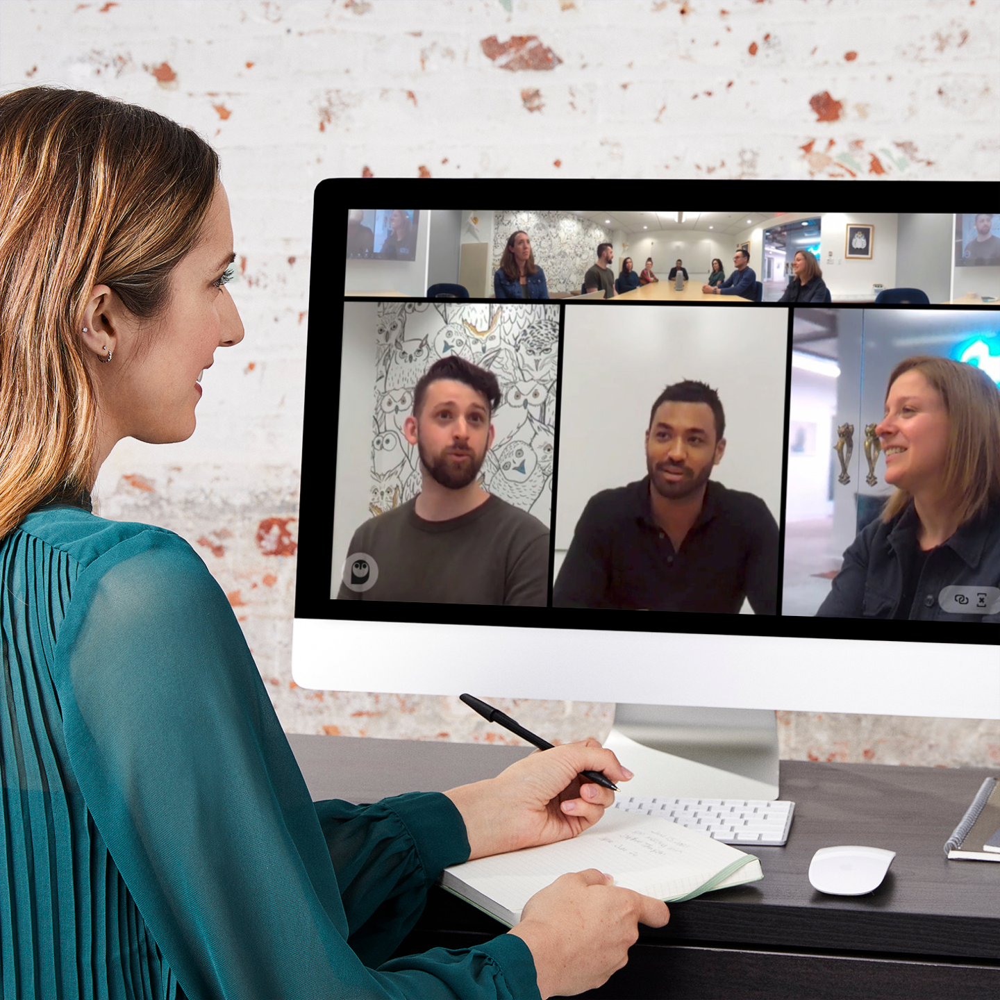
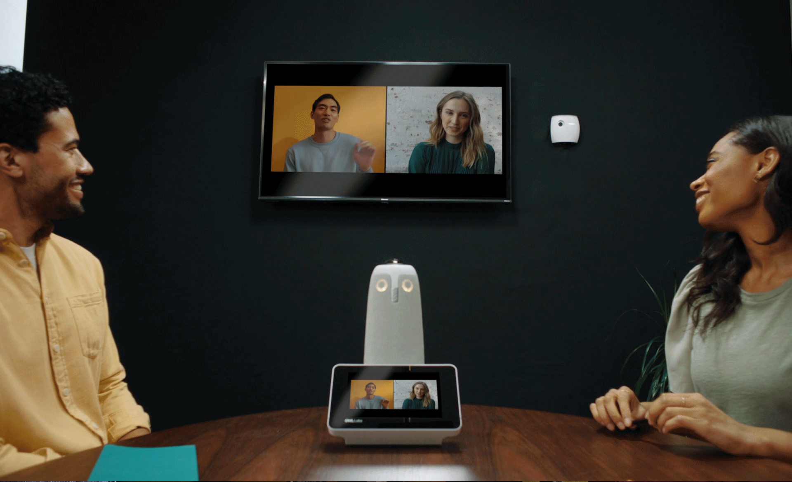
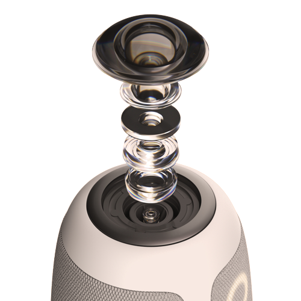
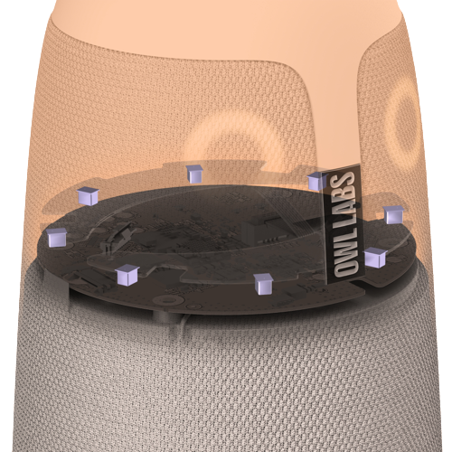
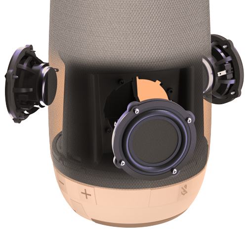
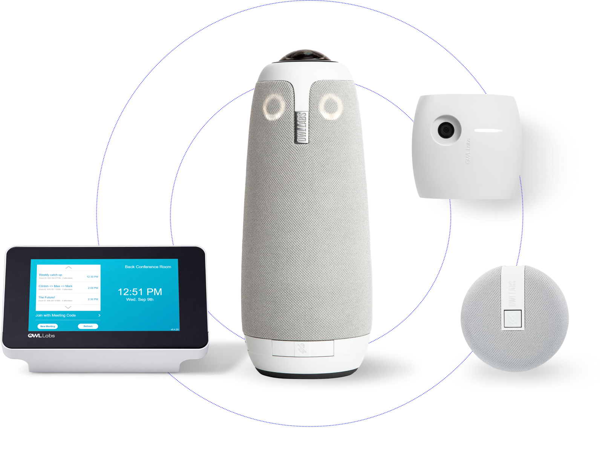
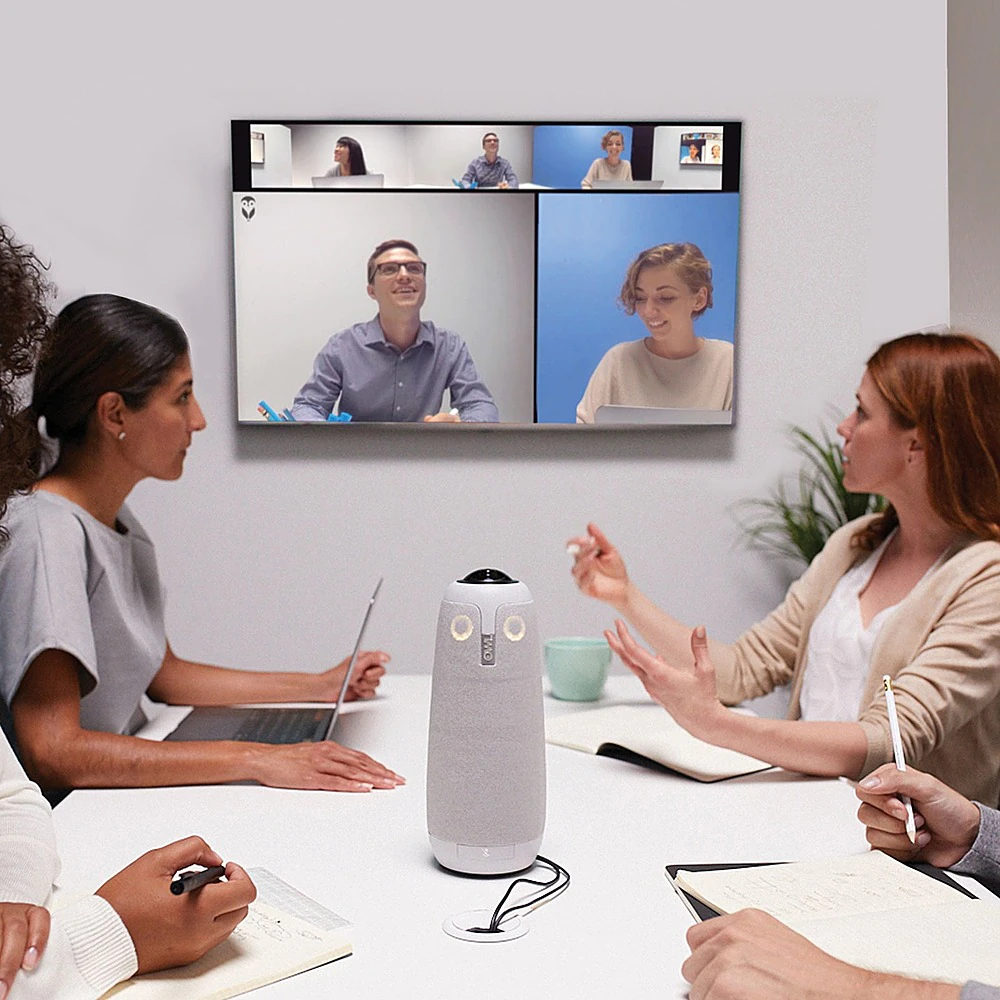

With the new intelligent 360° camera, mic, and speaker that grows smarter over time, you can create the greatest immersive hybrid meeting experience in any space.
Introducing the ideal hybrid collaboration tool
Equally includes each participant.
Promotes organic natural cooperation.
Flexible coverage for every area of space.
Launch meetings more quickly and save time.
The versatile device that works hard for your team
360° views will immerse you completely.
With the Meeting Owl 3, you can take a look into the technology that makes virtual meetings as real as possible.
See the whole room and view the entire space
You won't miss a thing because the panoramic 360-degree camera renders a 10 foot radius of the space in 1080p.
Make your voice heard
Even in large rooms, the mic's 18-foot (5.5m) audio pickup radius captures sound from all directions.
Take in every word
With the 360° tri-speaker, you can clearly and loudly hear remote team members from anywhere in the room.
Over time the Owl Intelligence System gets smarter
The Owl Intelligence System, a proprietary AI-driven piece of software that regularly receives updates to make collaborating even more immersive and inclusive, powers the dynamic features in every Owl Labs device.
Integrated software functions increase team productivity as a whole
Owl Connect | Presenter Enhance | Desktop and Mobile Apps
Tech Specs
Incorporates your current conferencing platforms:
"The Meeting Owl helps you actually feel connected," and "helps to build rapport, which is especially important across cultural boundaries."
Christina Sass, Co-founder, Andela